Lab 7-2: Snowpack ripening and melt initiation - Energy Balance#
Written by Eli Schwat February 2025.
In this lab, we will calculate all components of the energy balance and examine if energy balance calculations can identify the onset of melt.
This lab repeats code introduced in Labs 3-2, 4-1, and 4-2.
import xarray as xr
import numpy as np
import os
import urllib
import pandas as pd
import datetime as dt
import matplotlib.pyplot as plt
import altair as alt
Open data#
# tower measurements
sos_file = "../data/sos_full_dataset_30min.nc"
sos_dataset = xr.open_dataset(sos_file)
#precip measurements
precip_file = "../data/kettle_ponds_precip.csv"
precip_dataset = pd.read_csv(precip_file)
precip_dataset['date'] = pd.to_datetime(precip_dataset['date'])
precip_dataset = precip_dataset.set_index('date').to_xarray()
sos_dataset[['w_h2o__2m_c_raw', 'w_h2o__10m_c_raw']].to_dataframe().loc['20221221': '20221223'].plot()
<Axes: xlabel='time'>
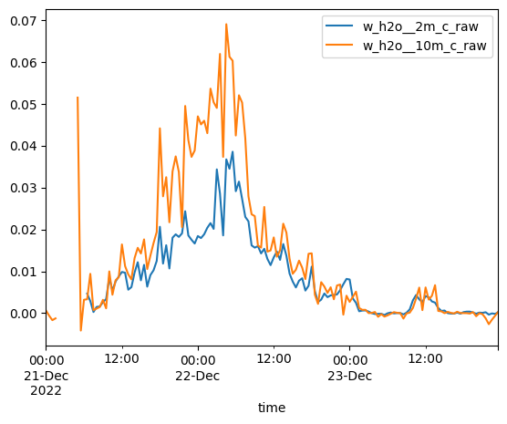
tsnow_vars = [v for v in sos_dataset if 'Tsnow_' in v and v.endswith('_d')]
snow_depth_vars = ['SnowDepth_d']
print(snow_depth_vars, tsnow_vars)
['SnowDepth_d'] ['Tsnow_0_4m_d', 'Tsnow_0_5m_d', 'Tsnow_0_6m_d', 'Tsnow_0_7m_d', 'Tsnow_0_8m_d', 'Tsnow_0_9m_d', 'Tsnow_1_0m_d', 'Tsnow_1_1m_d', 'Tsnow_1_2m_d', 'Tsnow_1_3m_d', 'Tsnow_1_4m_d', 'Tsnow_1_5m_d']
Extract snow temperature data for vertical profiles (repeated from Lab 4-1)#
# Transform the NetCDF dataset to be a "tidy" dataset of snow depths
snow_temp_dataset = sos_dataset[
tsnow_vars + snow_depth_vars
].to_dataframe().reset_index().set_index(['time', 'SnowDepth_d']).melt(ignore_index=False)
# Calculate the depth of the snow sensor (relative to the snow surface)
# using the snow depth measurements and the known above-ground height
# of the snow sensors, which is built into the variable name
snow_temp_dataset['height_agl'] = snow_temp_dataset['variable'].str[6:9].str.replace('_', '.').astype(float)
snow_temp_dataset = snow_temp_dataset.reset_index().set_index('time')
snow_temp_dataset['depth'] = snow_temp_dataset['height_agl'] - snow_temp_dataset['SnowDepth_d']
# remove measurements NOT in the snowpack
snow_temp_dataset = snow_temp_dataset.query("depth < 0")
# Add surface temperature data (depth=0)
surface_temps_dataset = sos_dataset['Tsurf_d'].to_dataframe()
surface_temps_dataset = surface_temps_dataset.rename(columns={'Tsurf_d': 'value'})
surface_temps_dataset['depth'] = 0
# Combine snow surface and in-snow temperature data
snow_temp_dataset = pd.concat([snow_temp_dataset, surface_temps_dataset])
Calculate components of the energy balance#
The snowpack energy balance equation without snow melt is:
where ∆z is the snowpack depth.
ground heat flux#
ground_heat_flux = sos_dataset['Gsoil_d']
net radiation#
net_radiation = sos_dataset['Rsw_in_9m_d'] - sos_dataset['Rsw_out_9m_d'] + sos_dataset['Rlw_in_9m_d'] - sos_dataset['Rlw_out_9m_d']
turbulent fluxes#
latent_heat_sublimation = 2590 #J/g
latent_heat_flux = sos_dataset['w_h2o__3m_c'] * latent_heat_sublimation
specific_heat_capacity_air = 1.005 # J/K/g
air_density = 1000 # g/m^3
sensible_heat_flux = sos_dataset['w_tc__3m_c'] * specific_heat_capacity_air * air_density
internal energy change#
from metpy.units import units
rho_s = 300 * units ("kg/m^3")
c_p_ice = 2090 * units ("J/kg/K") # specific heat capacity of ice
delta_t = 30*60*units("second") # our timestep is 30 minutes
snow_temp_dataset_deeperthan10cm = snow_temp_dataset.query("depth <= -0.10")
# Estimate the average snowpack temperature by averaging all in-snow temperatuer measurements for each timestamp
snow_internal_energy_df = snow_temp_dataset_deeperthan10cm.groupby(
[snow_temp_dataset_deeperthan10cm.index]
)[['value']].mean().rename(columns={
'value': 'snowpack_temp'
})
# add snow depth to our dataset
snow_internal_energy_df = snow_internal_energy_df.join(
sos_dataset['SnowDepth_d'].to_series()
)
# calculate depth-averaged temp and density
T_snowpack = snow_internal_energy_df['snowpack_temp'].values * units('degC')
Depth_snowpack = snow_internal_energy_df['SnowDepth_d'].values * units('meters')
# calculate dT/dt
dT_dt = np.gradient(
snow_internal_energy_df['snowpack_temp'],
30*60
) * units('K / second')
# calculate internal energy change term
dU_dt = rho_s * c_p_ice * Depth_snowpack * dT_dt
snow_internal_energy_df['internal_energy_change'] = dU_dt.magnitude
Plot energy balance during snowpack ripening!#
time_slice = slice('20230407', '20230412')
ground_heat_flux.sel(time=time_slice).plot(label=r'G')
net_radiation.sel(time=time_slice).plot(label=r'$LW_{in} - LW_{out} + SW_{in} - SW_{out}$')
latent_heat_flux.sel(time=time_slice).plot(label=r'$H_L$')
sensible_heat_flux.sel(time=time_slice).plot(label=r'$H_s$')
snow_internal_energy_df.loc[time_slice]['internal_energy_change'].plot(label=r'$\frac{d}{dt} (U \Delta z)$')
plt.legend()
plt.title('Snow Surface Energy Balance')
plt.ylabel('Energy flux (W/m^2)')
plt.show()
/opt/hostedtoolcache/Python/3.11.14/x64/lib/python3.11/site-packages/pandas/plotting/_matplotlib/core.py:981: UserWarning: This axis already has a converter set and is updating to a potentially incompatible converter
return ax.plot(*args, **kwds)
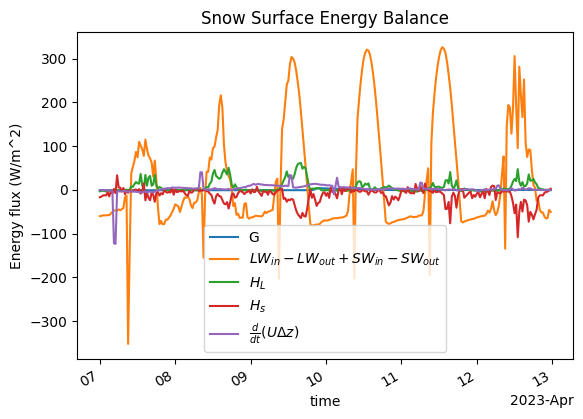
Nothing specific seems to indicate melting here…
Let’s zoom in on the snowpack internal energy storage change term.
snow_internal_energy_df.loc[time_slice]['internal_energy_change'].plot(
figsize=(4,2)
)
<Axes: xlabel='time'>
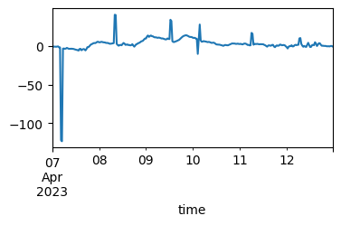
There’s a spike at the beginning of the time series that is making interpretation of the remaining data difficult. Let’s apply a rolling-median window to remove the spike.
snow_internal_energy_df.loc[time_slice]['internal_energy_change'].rolling(6).median().plot(
figsize=(4,2)
)
<Axes: xlabel='time'>
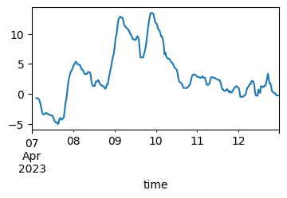
OK this is cool - it looks like changes in internal energy flatten out/stop happening around the time of snowmelt, which is consistent with our observations of ripening using the snow temperature profiles. Let’s examine the internal energy storage term for the whole month of April
time_slice = slice('20230401', '20230430')
snow_internal_energy_df.loc[time_slice]['internal_energy_change'].rolling(6).median().plot(
figsize=(4,2)
)
<Axes: xlabel='time'>
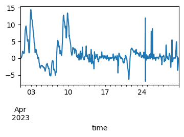
So it looks like the snowpack internal energy storage does mostly cease to fluctuate after April 10th. Brief fluctuations later in the month could be a result of new snowfall that is below 0˚C, but quickly ripens.
We know from Lab 7-1 that snowmelt started on the afternoon of the 9th, but in the plot of the energy balance terms above, we don’t really see anything special going on the 9th.
Because we did not calculate the \(E_{melt}\) term in the energy balance equation, if we calculate the residual, some of the residual should include the energy devoted to snowmelt. So, once snowmelt starts, the residual term should increase.
Below, we calculate the energy balance residual and plot it.
energy_residual = (
net_radiation + ground_heat_flux + latent_heat_flux + sensible_heat_flux
- snow_internal_energy_df.to_xarray()['internal_energy_change']
)
energy_residual.sel(time=time_slice).plot()
[<matplotlib.lines.Line2D at 0x7fde32651990>]
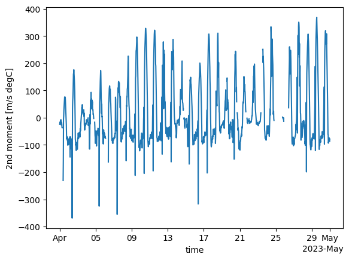
What do we see with the energy balance residual here?
Well, it does seem that the residual increases quite a bit around April 9th.
We also notice that the residual term seems to follow a similar pattern to the net radiation term. This just goes to show that the energy balance at our site is dominated by radiation.
Plot energy balance over larger time period.#
Let’s focus on the really significant terms in our energy balance. From the plot above, we see we can pretty much ignore ground heat flux and internal energy change.
Let’s start looking at the radiation components separately as well.
First let’s look at the days during ripening.
time_slice = slice('20230401', '20230412')
(sos_dataset['Rsw_in_9m_d'] - sos_dataset['Rsw_out_9m_d']).sel(time=time_slice).plot(label=r'$SW_{net}$', figsize=(6,3))
(sos_dataset['Rlw_in_9m_d']- sos_dataset['Rlw_out_9m_d']).sel(time=time_slice).plot(label=r'$LW_{net}$')
latent_heat_flux.sel(time=time_slice).plot(label=r'$H_L$')
sensible_heat_flux.sel(time=time_slice).plot(label=r'$H_s$')
ground_heat_flux.sel(time=time_slice).plot(label=r'$G$')
plt.legend(bbox_to_anchor=(1.0, 1), loc='upper left')
plt.title('Snow Surface Energy Balance')
plt.ylabel('Energy flux (W/m^2)')
Text(0, 0.5, 'Energy flux (W/m^2)')
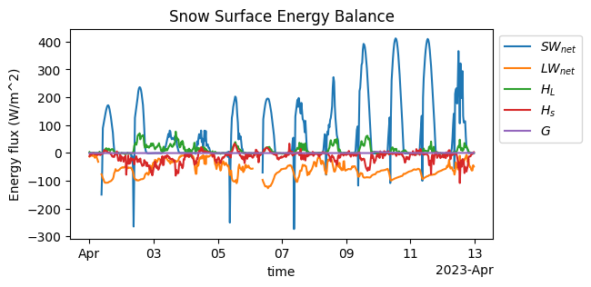
We can see that albedo (SW_out / SW_in) seems to decrease quite a bit starting April 8-9. This has a big effect on increasing the residual term - see below, compare April 1–2 (sunny days) to April 8-9 (also sunny days).
energy_residual.sel(time=time_slice).plot(figsize=(6,2))
plt.ylabel('Energy balance \n residual (W/m^2)')
Text(0, 0.5, 'Energy balance \n residual (W/m^2)')
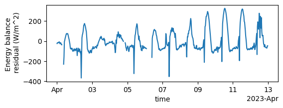
Remember the lab when we calculated albedo? Dust was deposited on the snow at this time. So the increase in net radiation contributed significantly to the snowpack ripening process, which we can observe in the energy balance residual above (again, some of this residual is going to snow melt).
Let’s look at just net radiation for March and April
time_slice = slice('20230301', '20230430')
net_radiation.sel(time=time_slice).plot(label=r'$LW_{in} - LW_{out} + SW_{in} - SW_{out}$')
ax1 = plt.gca()
ax1.set_ylabel('Net radiation (W/m^2)')
sos_dataset['Qsoil_d'].sel(time=time_slice).plot(
label='Soil moisture',
color='orange',
ax = plt.gca().twinx()
)
plt.axvline(x=pd.to_datetime('2023-04-08'), color='red', linestyle='--', label='April 8')
ax2 = plt.gca()
lines, labels = ax1.get_legend_handles_labels()
lines2, labels2 = ax2.get_legend_handles_labels()
plt.gca().legend(lines + lines2, labels + labels2, loc='upper left')
<matplotlib.legend.Legend at 0x7fde325ee110>
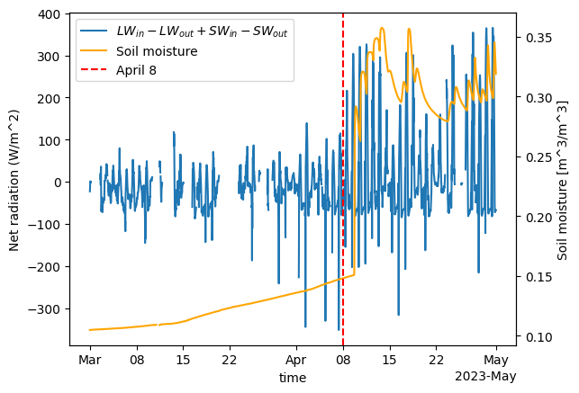
We see that net radiation doesn’t get very large until around when the dust was deposited, the snowpack ripened, and melt began.
Melting and Snow Pillow Measurements#
In Lundquist et al. (2024), strange behavior was observed for the four snow pillows at Kettle Ponds, where SWE measurements diverged after the initiation of melt. Let’s look at snow pillow SWE, soil moisture (to identify the start of melt), blowing snow flux, and precipitation to see what processes could explain differences between snow pillows.
time_slice = slice('20230401', '20230430')
fig, axes = plt.subplots(4,1, figsize=(8,6), sharex=True)
sos_dataset['Qsoil_d'].sel(time=time_slice).plot(ax=axes[0])
axes[0].set_ylabel('Soil moisture\n(m^3/m^3)')
sos_dataset['SWE_p1_c'].sel(time=time_slice).plot(ax=axes[1], label='Tower uw')
sos_dataset['SWE_p2_c'].sel(time=time_slice).plot(ax=axes[1], label='Tower ue')
sos_dataset['SWE_p3_c'].sel(time=time_slice).plot(ax=axes[1], label='Tower c')
sos_dataset['SWE_p4_c'].sel(time=time_slice).plot(ax=axes[1], label='Tower d')
axes[1].set_ylabel('Snow pillow\nSWE (mm)')
axes[1].legend(loc='upper left')
sos_dataset['SF_avg_1m_ue'].sel(time=time_slice).plot(ax=axes[2])
sos_dataset['SF_avg_2m_ue'].sel(time=time_slice).plot(ax=axes[2])
axes[2].set_yscale('log')
axes[2].set_ylabel('Blowing snow\nflux (g/m^2/s)')
precip_dataset['acc_prec'].sel(date=time_slice).plot(ax=axes[3])
axes[3].set_ylabel('Cumulative\nPrecip. (mm)')
for ax in axes:
ax.set_xlabel('')
plt.tight_layout()
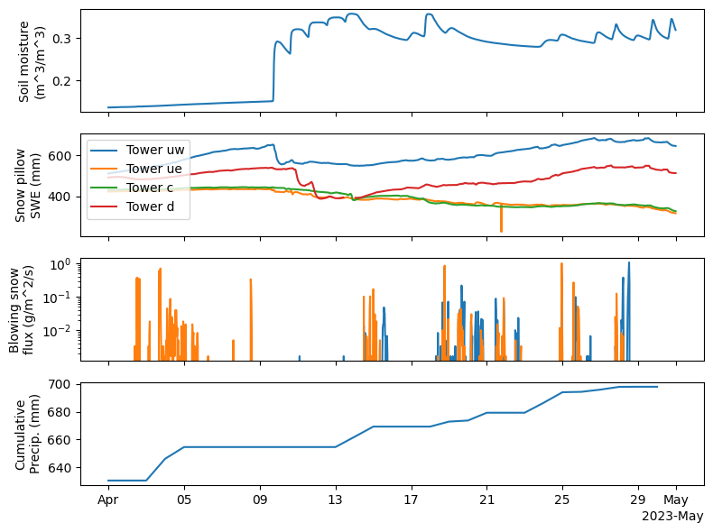
We can see, as in the Lundquist et al. paper, the snow pillow SWE increases at some snow pillows (d and uw) but not at the other two. While precip could explain this, as there was some precip during the month, the fact that two of the snow pillows do not show any increases, suggests that melt water may have to do the SWE increase. Lundquist et al. hypothesized that “meltwater flowed through the snowpack and refroze, resulting in increasing snow water equivalent (SWE) at the UW and D snow pillows”
sos_dataset['SWE_p1_c'].sel(time=slice('20230401', '20230618')).plot(label='Tower uw')
sos_dataset['SWE_p2_c'].sel(time=slice('20230401', '20230618')).plot(label='Tower ue')
sos_dataset['SWE_p3_c'].sel(time=slice('20230401', '20230618')).plot(label='Tower c')
sos_dataset['SWE_p4_c'].sel(time=slice('20230401', '20230618')).plot(label='Tower d')
plt.legend()
<matplotlib.legend.Legend at 0x7fde32118a10>
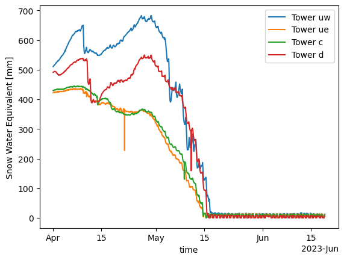